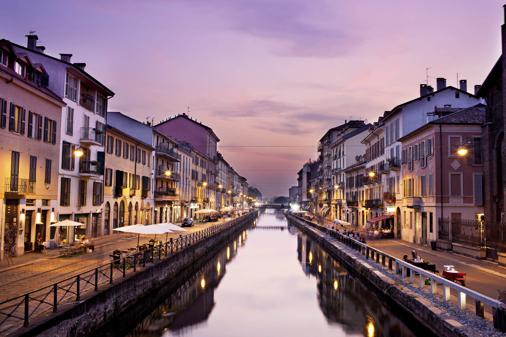
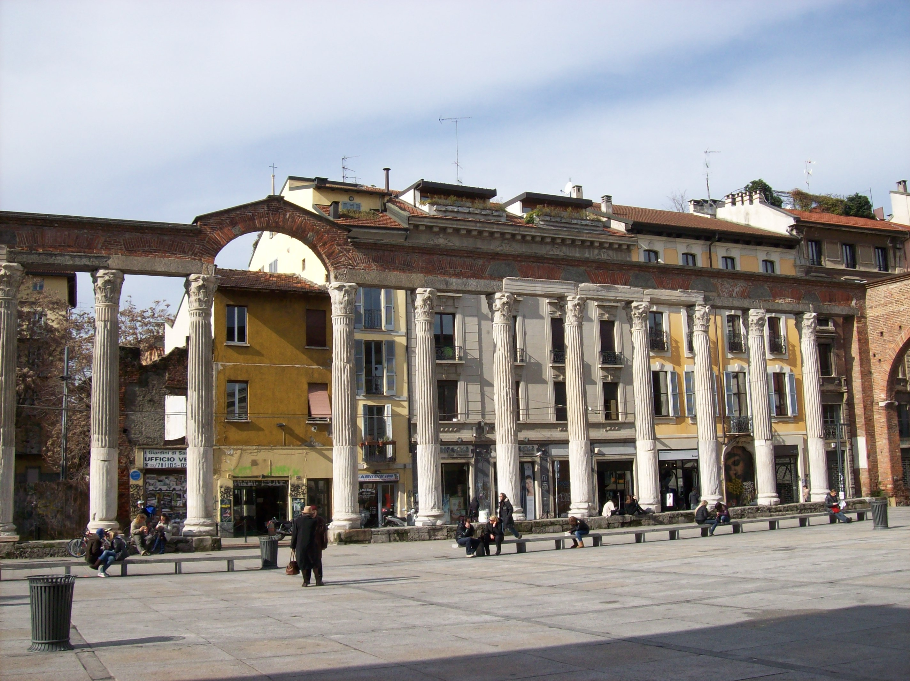
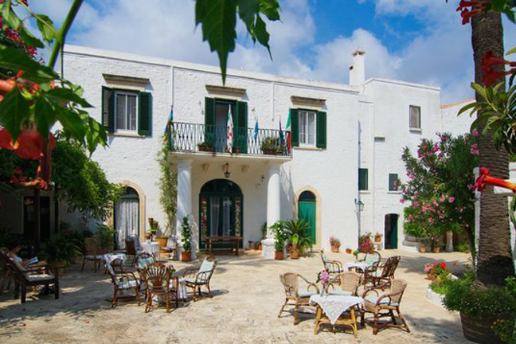

The sun seemed to shine even brighter on the white majestic marble of the Duomo. It was 8.00 am in the morning, few people in the streets, only the noise of tables and chairs on the ground, indicating that the city is coming to life. A waiter smiled at me while I was passing by the famous Caffe' Vergnano. I smiled him back and I thought to myself that people from Milan are not "cold" and "unfriendly" as they used to be called in other Italian regions.
On my way to Navigli, I decided that it was time for a "sweet" deviation at Cafe' Cova, one of the most famous and historical cafe' in Milan (it was founded in 1817!), and have one of their beautiful pastry. Outside the cafe', Via Monte Napoleone with its chic and visual windows reminds pedestrians of Milan's primary position in Fashion industry. Somehow you can perceive that Milan stands proud of its role of financial capital as well as of its competitive attitude. It's written in the faces of its citizens that everyday start working with the same "obsessive" idea in mind: you need to build your own future, or in the way they respect the city and take care of it.
I was deep in these thoughts, when suddenly the sight of Colonne di San Lorenzo made me recall of the hot and dump summer nights, spent with friends sitting between the columns, talking and laughing. That place is, indeed, a hangouts for young people in Milan. In a way it's a second home for them, the place where they start or finish their nights, where they met when they have to say goodbye or welcome back.
Fifteen minutes later I arrived at Navigli, the system of navigable and interconnected canals around Milan. The atmosphere here is really unique: small bar and restaurants surround both banks of the river. But I was there with a purpose: go and see again the small Vicolo delle lavandaie. It is a hidden alley where you can see an ancient washtub, used by housewives to wash their clothes. It is perceived by citezens as a symbol of work and dignity, two attributes that are written in the DNA of the city. This place have always impressed me. Probably because it’s hidden. Or because it's one of the few historical places that the city has. I think part of my love for Milan comes from its ability to impress me when I least expect it, from its contrasts between modern architecture and the few, rare, glimpses of ancient times. Milan's hidden beauty challenge you to seek it. And once you find it, it takes your breath away.
|  | ||
LOST WORLD |
GOBI DESERT |
MASSERIA IL FRANTOIO |